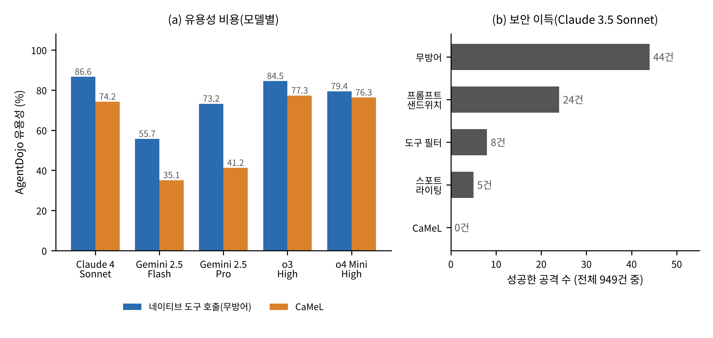

Featured · 서베이 연구
LLM 프롬프트 인젝션 공격·방어 연구 동향 및 계층화된 대응 전략
문제 정의
LLM이 이메일·웹페이지 같은 신뢰할 수 없는 데이터를 읽는 에이전트가 되면서, 그 안에 숨은 지시문이 모델 행동을 탈취하는 프롬프트 인젝션이 핵심 위협이 되었습니다. 방어 연구는 많지만 자체 보고 성능과 독립 재평가 결과가 어긋나는데, 이를 한눈에 비교해 실무 선택으로 연결한 자료가 드물었습니다.
역할
개인 프로젝트. 문헌 선정과 검증(인용·수치 대조), 분류 체계 설계, 비교 매트릭스와 의사결정 매트릭스 제안, 그림·표 제작, LaTeX 조판까지 전 과정을 수행했습니다. 초안·교정·검증에 AI를 활용했고, 인용 수치는 원문과 대조해 고쳤습니다.
기술
- XeLaTeX
- BibTeX
- Python
- matplotlib
- 문헌 조사
- AI 보조 검증
결과
- 2022–2026 핵심 문헌 21편을 공격(전달 경로·페이로드)과 방어(텍스트·모델·실행 수준)로 체계화
- 대표 방어 4종(StruQ, SecAlign, Meta SecAlign, CaMeL)을 한 표에서 비교
- 데이터 신뢰도 × 행동 가역성 기준의 계층화된 방어 결정 매트릭스와 보안–유용성 트레이드오프 정량 제시
- 8쪽, 표 4개, 그림 2개
